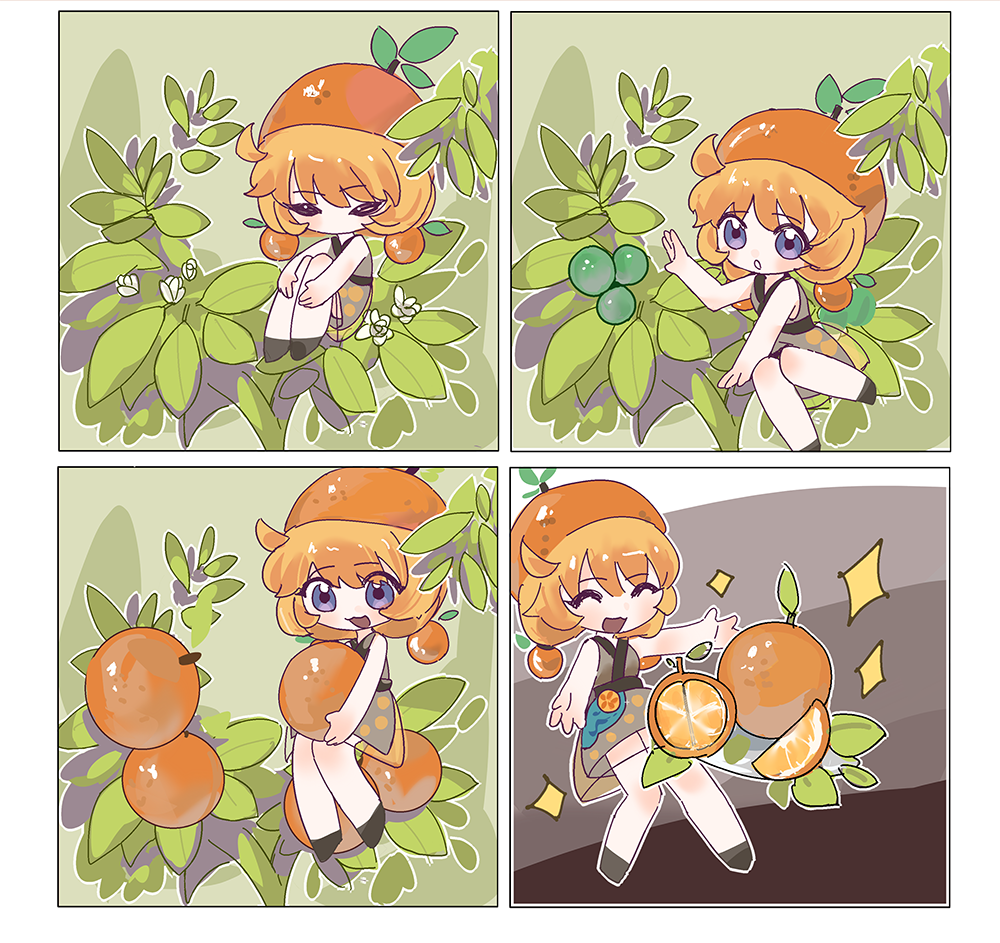
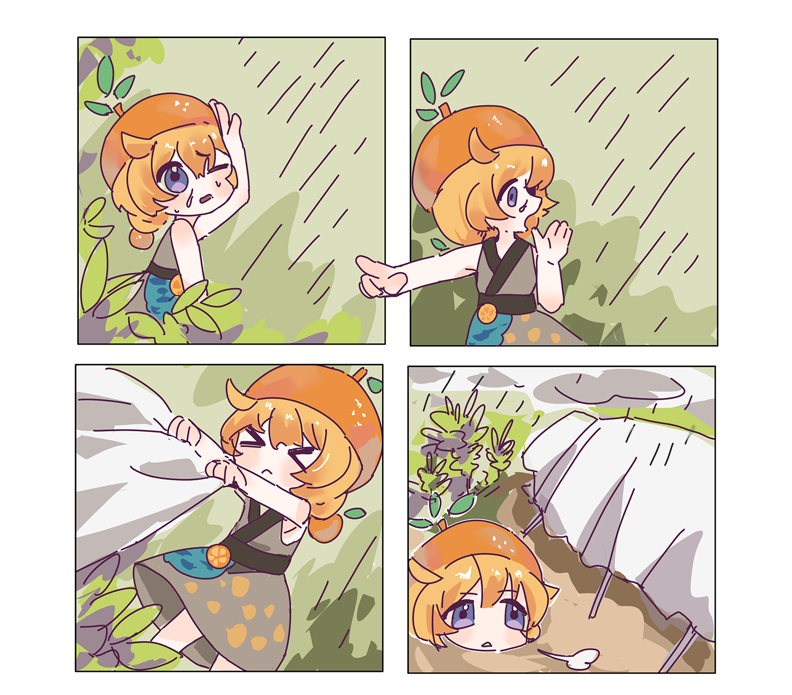
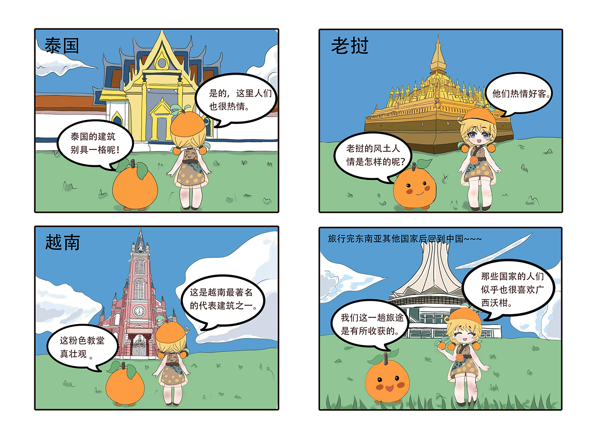

CNEN
小沃 种植记
小沃在武鸣片沃土上诞生的。从小在沃柑林中长大，与沃柑树为伴，她的生活充满了沃柑的甜美香气。她品尝着沃柑的果肉，感受着那独特的口感和丰富的营养， 也见证了沃柑从青涩到成熟的过程。每当沃柑树上挂满了金黄色的果实，小沃都会感到无比的喜悦和自豪。 小沃是这片土地和沃柑树的守护者，在病虫害的侵袭时，要采取有效的措施进行防治。面对暴风雨时，为沃柑树搭建起临时的庇护所。
- 小沃见证沃柑的生长
- 好可怕的虫子！，小沃要保护沃柑！
- 暴风雨来了，我要拯救小果树！
- 小沃形象
小沃 出海记
武鸣沃柑开始走出国门，迈向更广阔的天地。小沃作为武鸣沃柑的IP形象，也开始了他的出海之旅。 他带着家乡的味道和文化，走入了东南亚各个国家。小沃学会了用各种语言向外国人介绍武鸣沃柑的特点和优点，讲述武鸣沃柑和小沃的故事。 小沃也在这个过程中不断成长和进步，他变得更加自信和成熟，成为了一个真正的国际小使者。 如今，小沃已经走过了许多国家和地区，他的足迹遍布全球。他用自己的故事和经历， 传递着武鸣沃柑的美味和文化，让更多的人了解和喜爱这种来自中国的美味果实。
- 